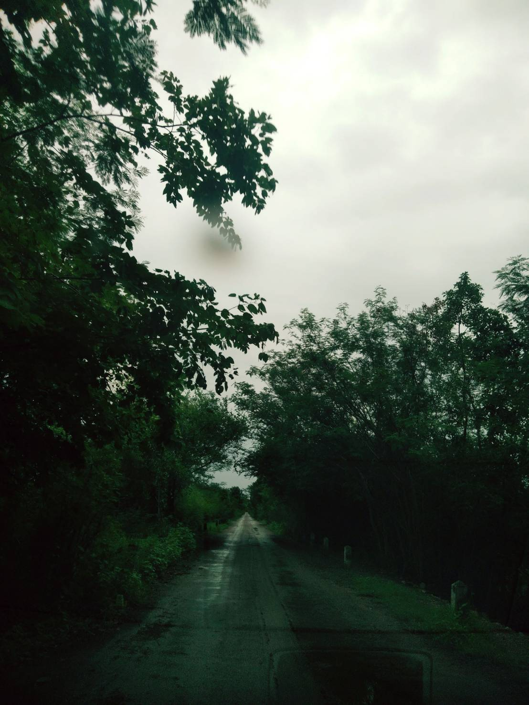
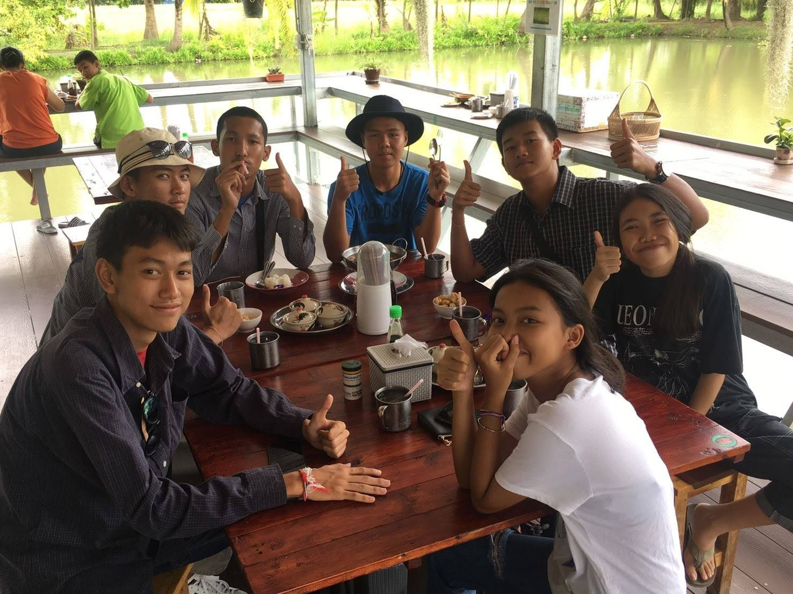
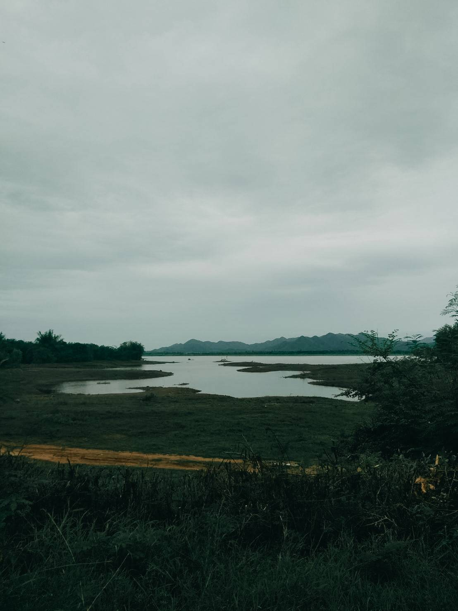

Ratchaburi
29.06.2019
I go for visit my sister at Ratchaburi this is my first road trip.We set off on morning when we arrived first thing we need to do is eat the lunch our lunch is the boat noodle. then our travel goal are Gao jone waterfall.The way we go we have to pass Huai mai teng reservoir we drive passed reservoir so slowly to admire atmosphere until we are at Gao jone waterfall. But the way to walk to 9 floor is to far we decide to stay at only 3 floor because it not have time enough we stay and relax at water floor before we go back to home.


